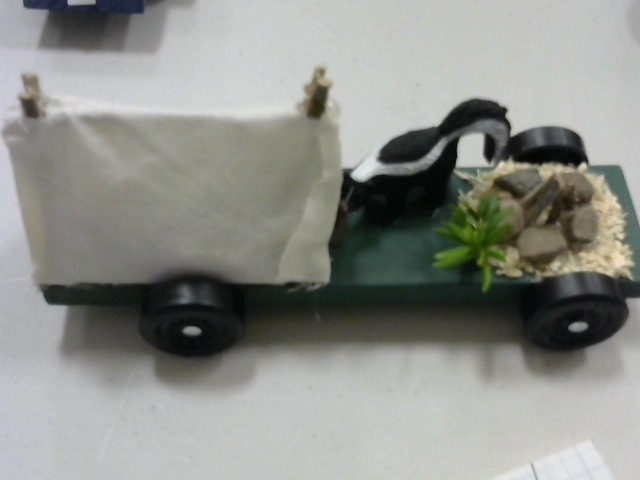
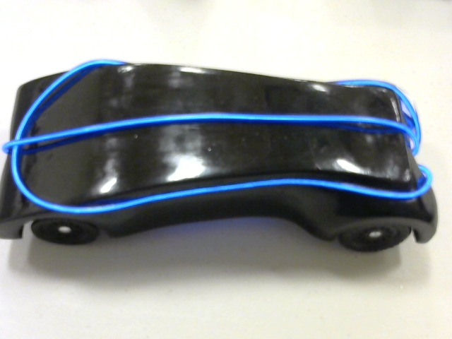
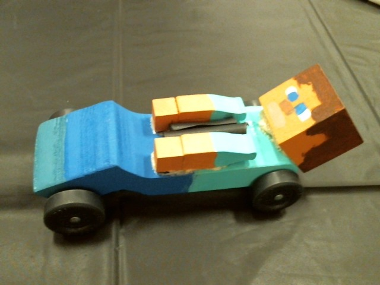
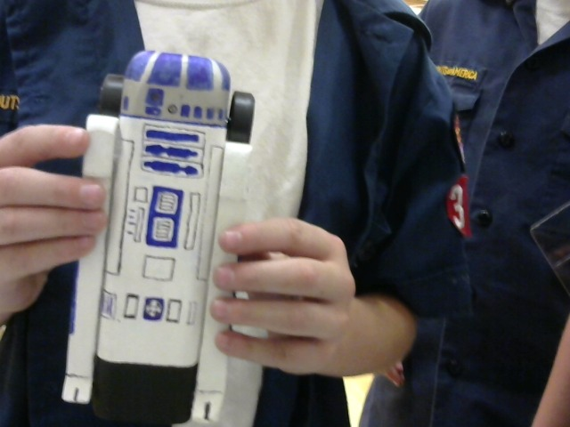
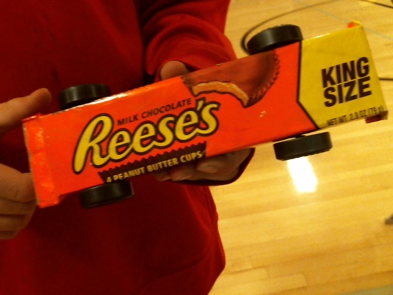
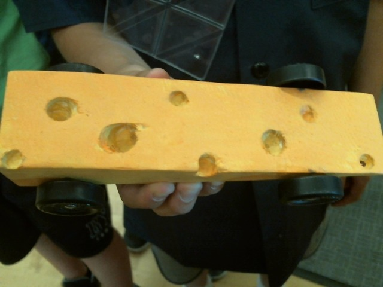
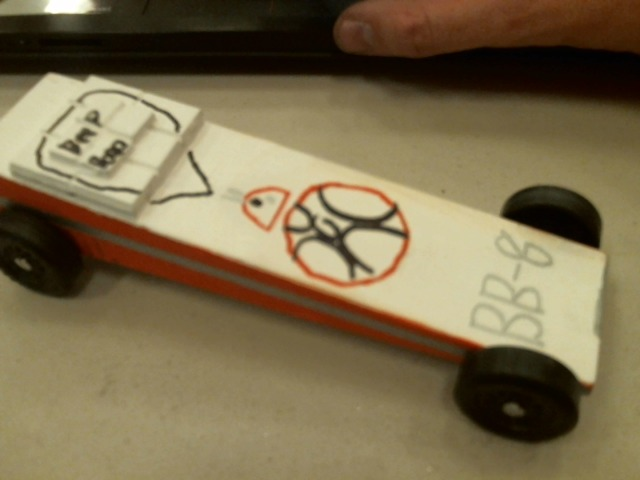
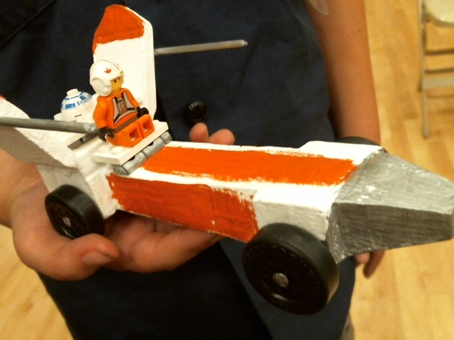
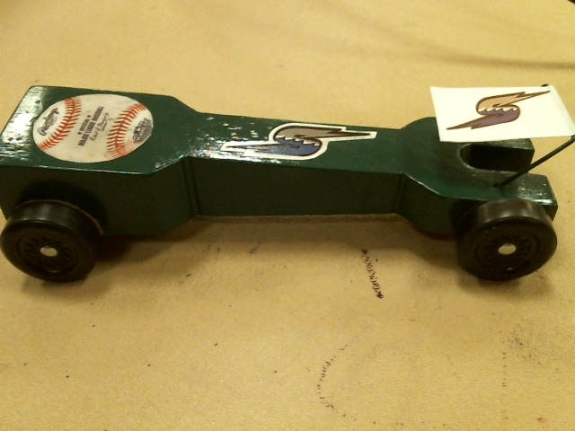
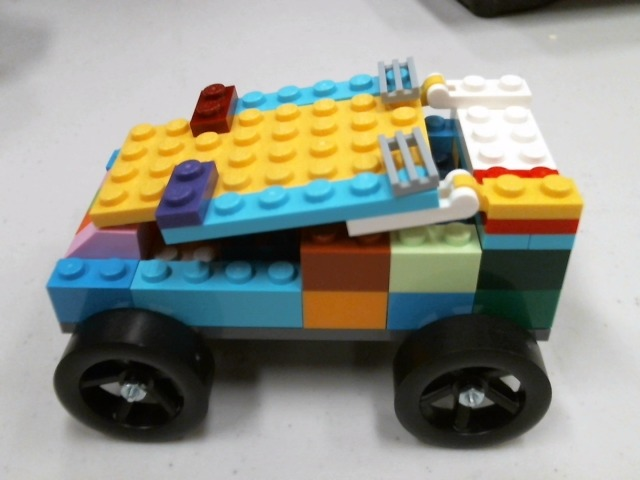

What makes a fast car? There are many variables, but the most crucial is the wheels. Nice, straight wheels. A little graphite helps to reduce friction. Also, moving the center of mass to the back of the car means you are starting the race with more potential energy compared to the other cars, which is transferred into kinetic energy, hence more speed. You can play around with some of the variables in the Pinewood Derby Simulator.
Most people like to make their pinewood derby cars as fast as possible. While I admit that this is indeed the point of a race, I really do appreciate a good looking, fun pinewood derby car. I've seen hundreds of cars, and here are a few of my favorites:
This one is my all-time favorite, which I call "Skunk Invading a Campsite".

The blue strips on this one light up. I recall we turned the gym lights off every time this car raced.

Maybe this feels a little like luge.

R2-D2. I love the hand-drawn details.

I've seen a lot of cars meant to look like food, but this is the most realistic representation to date. The boy somehow got his car to fit inside a real Reeses wrapper.

Honorable mention for food representation.

This car was named "BB-8'nt no Fun to Lose." Finished in the top three.

Yes, if you bring a Star Wars car to the pinewood derby it'll probably end up on this page.

Here's an interesting one meant to game the timer system. The starting post sites in the notch, and the little wing in front crosses the IR beam a moment earlier than it would otherwise. Definitely illegal, but it didn't matter since the posts on my starting gate were much higher than the little wing, so the car didn't have any advantage whatsoever. Nice baseball decor, though. (And don't think about gluing a magnet to the front of your car, because the starting posts are made of oak. And honey is not allowed either. Yes, I know all the tricks.)

I did an event once where all the cars were Lego cars, built from kits. Worked well for a group without many resources to build cars using the normal kits.
